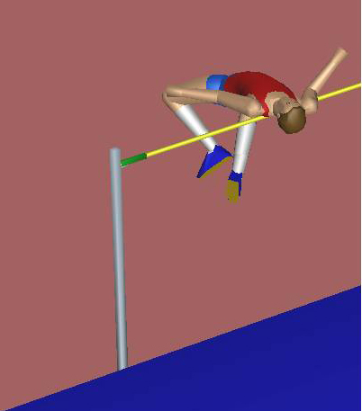

Internal Martial Arts: Dan Tian or Balls of the Feet?
Traditionally, practitioners of the internal martial arts focused on developing and generating power from Dan Tian, an area in the body centered around the navel. It is commonly believed that by cultivation of the qi power in this area one can develop internal power. This theory has guided the practitioners of internal martial arts for hundreds of years. However, many people who adopt this approach still cannot develop any power after decades of training.
In any area of science other than the martial arts, researchers constantly make new discoveries and replace old, incorrect theories with newer and more accurate ones. In the martial arts discipline, however -- due to the Chinese tradition of respecting one's ancestors and teachers -- most people don't even think about conducting research to improve existing methods. Thus it often happens that an old theory, even if it is incorrect, can be passed down from generation to generation without any challenge. This problem is exacerbated by the fact that a teacher who has taught an incorrect approach to a significant number of students will have a vested interest in continuing to use that approach, even if he or she realizes that the approach is incorrect. The only exception will be the teacher who is truly open-minded and always pursuing the truth.
Is it possible to revolutionize common human body mechanics, such as those used in sports and fighting, so that significant progress can be made? In sports, there is a well-known example - the evolution of high jump techniques. The high jump is a track and field athletics event in which competitors must jump over a horizontal bar placed at measured heights without the aid of certain devices. The competition has existed since the Olympic Games of ancient Greece. Over the centuries that followed, competitors introduced increasingly effective techniques to arrive at the current form. The most significant change was the transition from the "dive straddle" to the "Fosbury-flop" technique. Before the 1968 Olympic Games in the Mexico City, the dive straddle technique was the most popular technique among the high jumpers.
 Dive Straddle high jump technique
Dive Straddle high jump technique
In the 1968 Olympic Games, however, a completely new technique, the Fosbury-flop, was used by Dick Fosbury to win the gold medal. The day after the 1968 Games, every high jumper in the world tried the Fosbury-flop.
Fosbury-flop high jump technique
This led to the separation of the world's jumpers into two groups for a while: those who used the straddle and those who used the Fosbury-flop. Today, all high jumpers use the Fosbury-flop technique and the straddle has disappeared.
In the community of the internal martial arts, a similar kind of revolution is under way. Many internal martial arts practitioners, after they master the Pre-Heaven Power Method, are totally convinced that this method is superior to traditionbal practices and that a new era of internal martial arts has arrived.
Reference:
PowerPoint slides of "The Evolution of High Jumping Technique: Biomechanical Analysis" by Jesus Dapena, Department of Kinesiology, Indiana University, U.S.A.